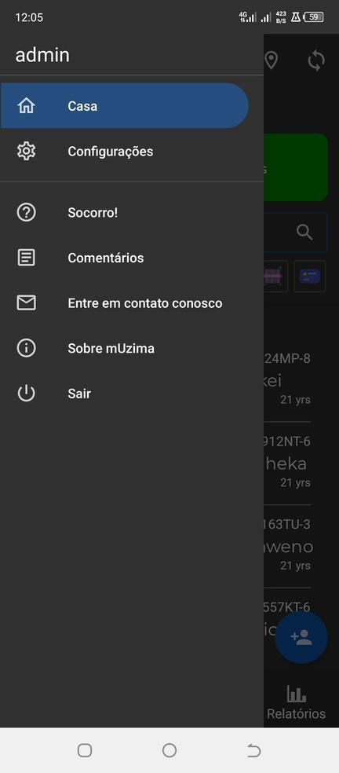
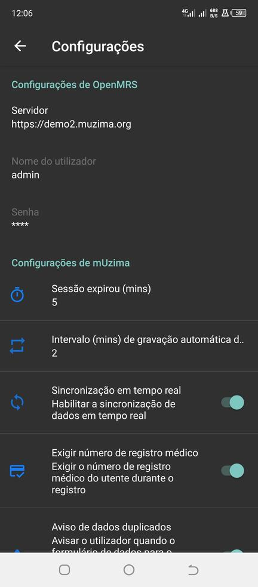
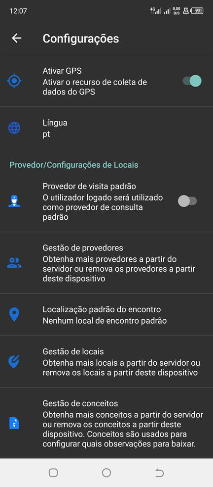

Configurações em mUzima
As configurações do programa mUzima podem ser acessadas através da página inicial. Clique no ícone de hambúrguer no canto superior direito.

Configurações do OpenMRS
Esta configuração especifica o URL do servidor usado pelo mUzima para acessar os dados. Um usuário mUzima pode alterar
este endereço clicando no campo de endereço. O nome de usuário e a senha são alterados apenas no servidor.

Configurações do mUzima
Estas são configurações de nível de aplicativo.

- Tempo limite da sessão se o programa não estiver em uso. Este é um aspecto de segurança do mUzima projetado para proteger as informações do paciente.
- O intervalo de salvamento automático do formulário (minutos) é usado para salvar o formulário sem intervenção do profissional de saúde.
- Uma sincronização em tempo real que permite enviar formulários preenchidos automaticamente para o servidor.
- Exigir número do prontuário médico fará com que o número do prontuário médico seja obrigatório se estiver ativado.
- Aviso de dados de formulário duplicados se o formulário tiver sido preenchido mais de uma vez; alerta o usuário ao salvar dados.
- Tamanho da fonte; o usuário pode escolher o tamanho da fonte entre pequeno, médio e grande.
- Ativar modo Dia é usado para alternar entre o modo escuro (padrão) e o modo claro
- Ativar SHR ativará/desativará os registros de saúde compartilhados (recurso de cartão inteligente) no aplicativo móvel
- Ativar GPS ativará/desativará a coleta de informações de GPS, bem como o recurso de mapeamento geográfico
Configurações de provedor/local
Estas são configurações de nível de provedor/local

- Provedor de encontro padrão: o usuário conectado será automaticamente preenchido como provedor de serviços do paciente ao preencher um formulário.
- Gerenciar provedores: usado para obter outros provedores de serviços do servidor ou removê-los do aplicativo mUzima.
- Local de encontro padrão: o local de encontro será usado como local de encontro padrão durante um encontro e preenchido previamente em um formulário.
- Gerenciar locais: o usuário pode obter locais de encontro do servidor ou remover um local de encontro em mUzima.
- Gerenciar conceito : essa configuração é usada para obter mais conceitos do servidor ou remover os conceitos do dispositivo.